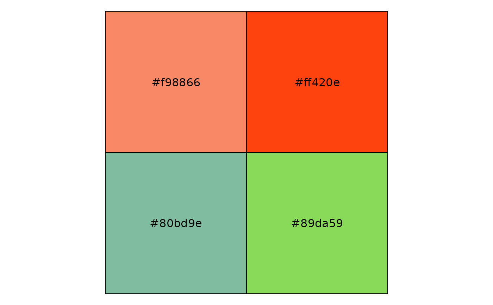
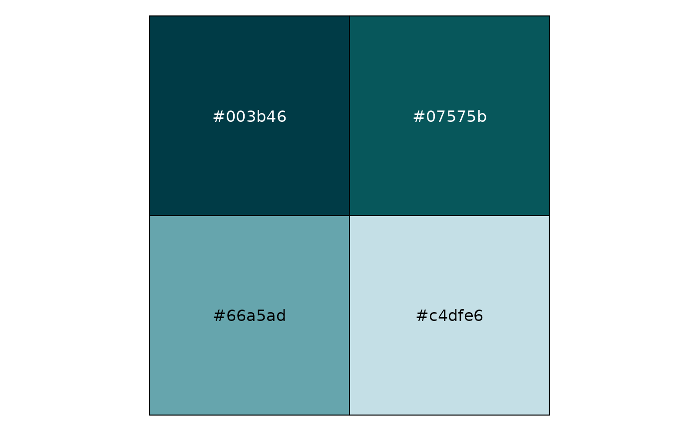
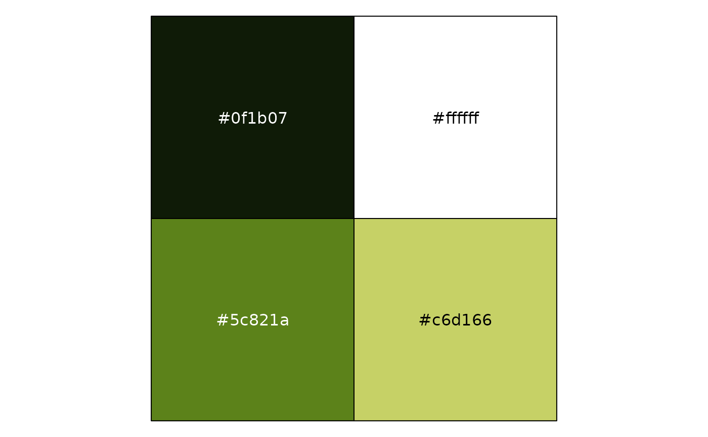

150+ color palettes from canva.com. See canva_palettes().
Arguments
- palette
Palette name. See the names of
canva_palettes()for valid names.
Examples
require("ggplot2")
require("tibble")
#> Loading required package: tibble
if (require("purrr") && require("scales") && require("dplyr")) {
canva_df <- map2_df(
canva_palettes,
names(canva_palettes),
~ tibble(
colors = .x,
.id = seq_along(colors),
palette = .y
)
)
ggplot(
canva_df,
aes(
y = palette,
x = .id,
fill = colors
)
) +
geom_raster() +
scale_fill_identity(guide = FALSE) +
theme_minimal() +
theme(
panel.grid = element_blank(),
axis.text.x = element_blank()
) +
labs(x = "", y = "")
show_col(canva_pal("Fresh and bright")(4))
show_col(canva_pal("Cool blues")(4))
show_col(canva_pal("Modern and crisp")(4))
}
#> Loading required package: purrr
#>
#> Attaching package: ‘purrr’
#> The following object is masked from ‘package:scales’:
#>
#> discard
#> Loading required package: dplyr
#>
#> Attaching package: ‘dplyr’
#> The following objects are masked from ‘package:stats’:
#>
#> filter, lag
#> The following objects are masked from ‘package:base’:
#>
#> intersect, setdiff, setequal, union


